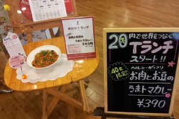

Team T-Lunchとは ● ● ●
●TABEL FOR TWO(TFT)とは？

世界人口はいまや70億人。そのうちの10億人は、栄養を十分にとることもできない飢餓と貧困に苦しんでいます。一方、日本を含む先進国では、ほぼ同数の人が栄養過多で肥満や生活習慣病に悩んでいます。
「TABLE FOR TWO（TFT=食の分かち合い）」は、このような食の不均衡を解消するために、NPO法人 TABLE FOR TWO
Internationalによって開始された日本発の活動です。特別に開発されたヘルシーな食事を提供することで、先進国の人々は健康管理を進め、同時に、1食につき20円の寄付金が開発途上国へ送られて、途上国の子供たちに給食1食が支給される・・・TFTは、開発途上国の子どもたちと先進国の私たちが同時に健康になれる仕組みです。
TFTを通して、学内の全員が自己の健康管理を考え、あわせて、気軽に持続的な社会貢献、国際貢献を続けるきっかけになればと願っています。
●Team T-Lunchとは？

「Team T-Lunch 」は、このTFTをKUISに導入・推進していくために、2011年、和田ゼミ社会起業研究会を母体に発足しました。きっかけはTFTの創立者である小暮真久氏の著書『「20円」で世界をつなぐ仕事』に感銘を受けたことです。
誰でもメンバーになることが可能で、1〜4年の仲間が活動しています。
「Team T-Lunch 」では、大学および食堂運営会社と協働しながら、ヘルシーメニューの開発、広報、アフリカへの寄付手続きなどを担ってきています。
また、幕張チャリティ・フリーマーケットにおける出店など、活躍の場も広げてきています。乞うご期待！